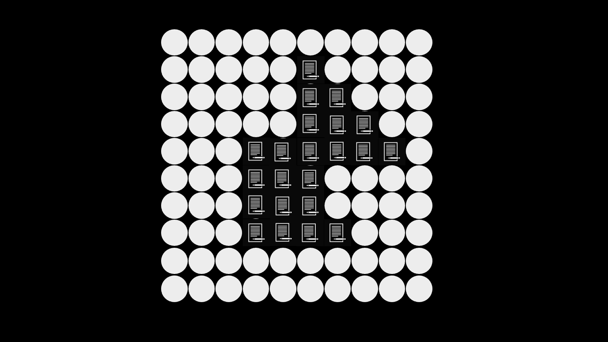

What are modules?
Summary
Research modules are the individual steps of a research process. By publishing modules, each step of the process becomes citable and findings receive more context. A module can include text, data, code, or any other form of research output. These serve as the building blocks of findings.
Why do we even need modules?
In order to introduce the concept of research modules, we go back to the fundamentals of research. One such fundamental principle is that research is the process of documenting information. This fundamental principle can already help us highlight some of the issues with how we document the process now.
Selective publication
If we think about a 100 research studies being done by authors, we ultimately only see a subset of that work in the research literature.

If only part of all the work that is done gets published, a lot of research work remains undocumented. This means we are not documenting what information we are producing, regardless of how reliable it may be.
Storytelling in articles
When we zoom in on one of those research articles that does get selected for publication, we can start asking a different question around the documentation of the research process: Is the purpose of a research article to document the research process?
Being published is often seen as a heuristic for being of high-quality, because it has been reviewed and that some third party decided to publish it. But in the end, the fundamental principle of research is not about how popular or how many approvals the research gets - it is about the process.
As such, when we see a research article, we see a story or a narrative about what happened. We see a reconstruction and we only get to see what is chosen to be displayed (always to varying degrees). Hence, we do not know what happened before - we know what the reconstruction is.
If we had the power to see the process for a paper, we might be able to distinguish the quality of the two papers displayed above. But how can we really know if we are presented with a paper, which of the two occurred? Or what other process may have occurred that we have not even thought of?
The process behind the article might be highly meticulous, it might include a lot of back and forth, or it may even contain some practices that are considered shortcuts by many. All to say, we do not know what the process was like except for the story we are told.
Now this may be fine for other domains in our society, like literature, but in research it is not. That’s because, the understanding that research brings can only be as good as the process. So when we think back, we might have an output where we know for some reason there is a regular empirical cycle behind it.
- Research is the process of documenting information
- Understanding that research brings can only be as good as the process
Where do modules fit in?
Modules are an alternative publishing format for articles (introduced in Kircz 1998). They are the building blocks of any research study - the building blocks that are necessary. Modules are published on an ongoing basis, even before a traditional research article may be published.
In a qualitative study, we know beforehand we produce interview protocols, transcripts, coding protocols, and more to represent the research process. Each of these are individual modules.
In a quantitative study, we know beforehand we produce data collection materials, data, analysis code, and more to represent the research process. Each of these are individual modules too.
Modules can contain any kind of output you may create during your research. This includes data files, code, or other non-text outputs.
Visual representation
We can directly compare modular publishing to article publishing, to make the concept tangible. Take for example the following slide:
In this situation we have the power to see the research process that is behind an article (left). These steps are represented on the right as individual modules. Each module is designated a DOI, to make it citable, and gets linked to any previous modules of relevance. Each module also has to say what step of the process it is supposed to represent (more on that later).
Here we have another example:
In this situation, the research process included updating the theory. Articles have a hard time representing this (left), but with modules (right) we include this update as part of the research process. We can see that there is a theory before and after the first Prediction module.
This kind of learning is messy and often does not get shared because of it, but we believe it is valuable to understand the research process.
Another example we want to highlight where modules can help, is where articles make something problematic that can be seen as part of the research process.
Many researchers condemn the process depicted on the left as cutting corners (p-hacking, HARKing). It causes problems because it can create overly optimistic findings, and is hard to spot reliably after the fact. When documenting the research process with modules (right), what is considered “cutting corners” becomes part of the documented research process.
In sum, we can say research modules are the steps that go into a research process, and by sharing those steps over time we can understand how good our process and the resulting understanding actually is. In the next section you will find an exercise to practice modular thinking.